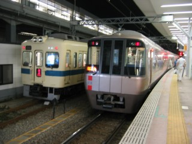

とあるイベント(?)で、アサヒビール神奈川工場へビール工場見学に行く。新宿から、OER 8000形の快速急行に乗る。もう9000形は走っていないのだと思うと、悲しくなる。下北沢駅の地下化工事のためか、東北沢では急行待避線がなくなっていた。多摩川橋梁から登戸駅にかけても、複々線の工事中。数年後(それとも、10年後?)には、景色も大きくかわっているのだろうか。新松田からバスに乗るが、富士急行に(その、とあるイベントの)連絡が行っていなかったのかスゴイ混雑。情報連携しろよ。これは、帰りも同じ。そもそも、工場見学受付のおねーちゃんも知らないというのはどーよ!?
パーツ交換後のPC(Cathy)だが、不定期に再起動してしまう不具合が発生。再現性がないので、原因がよくわからない。こーゆーときは物理的な接触が原因だったりするんだが、それを再確認するのは面倒くさい。デバドラ(デバイスドライバ)やBIOSをアップデートしてみるが、変化なし。とゆーか再現性がないため、直ったのかな～と思っていると再起動がかかってしまう、とゆー悲しい状況。そもそも、Dドライブのスキャンディスクがフェーズ5の1％までしか進まないのも問題。また、それが関連しているのか否かわからないことも問題。とりあへず、ワッシャーを買ってこよう。
とゆーことで、突然写真。新宿駅で発車を待っているときにやってきた、OER 3000形。折り返し小田原行きの急行になったので、これに乗れば相模大野で乗り換えの必要がなかった。
しかし少し早めに新松田に着いていたかったので、相模大野まで藤沢行きの快速急行に乗る。写真は、相模大野から乗ってきたOER 5500形。9000形が引退してしまったということは、そのうちこの5500形もいなくなってしまうのだろう。
新松田から小田原まで乗った、OER 8000形。8000形も登場してから、20年以上たつ。最近の車両が味気ないのは、ステンレス車体がむき出しだからだと思う。
ロマンスカー10000形HiSE。7000形LSEって、もう走っていないんだっけ? →10000形HiSEと同じ塗装で、走っている模様。
小田急線の箱根湯本までの乗り入れは前からあったが、ついに完全切り替えとでも言おうか、箱根登山鉄道の小田原－箱根湯本間の運行がなくなってしまった。誰もいないホームは、さみしい……。
ましてやホームにこんなもの描かれていたら、ますますさみしい。
 帰路は、ロマンスカー30000形EXEに乗る。さすがに疲れていたのか、あっという間に眠ってしまい、気がついたら新宿直前だった。
F1イタリアGP。最近のマイブームは「まさかのマッサ」なのだが、今回のマッサのパフォーマンスはいまいちだった。アロンソは予選妨害のため、10番グリッドへの後退。なんつーか、FIAの「いつものやり方」って感じ。決勝では、M.シューマッハもアロンソもピットストップで順位を上げる。まさかのマッサは求められた仕事をこなせなかったな～と思った途端、アロンソのマシンにまさかのエンジンブロー。しかし、マッサはアロンソを避けるためにパニック・ブレーキ。タイヤにフラット・スポットを作ってしまう。緊急ピットインで9位に落ちたため、コンストラクターズ・ポイントの貢献もなし。なにを、やっとるか。
M.シューマッハは、トップでチェッカーフラッグを受ける。アロンソはノーポイントだったため、二人のポイント差は2ポイントまで縮まった。ドライバーズ・チャンピョンシップはおもしろくなったが、FIAの「いつものやり方」にのせられたような感が拭えない。M.シューマッハはレース後のインタヴューで、今シーズンでの引退を発表。そのあと、フェラーリがプレス・リリースを出す。来シーズン、ライコネンがフェラーリで走ることになった。これも悪いことではないけど、なんつーか「やっぱり……」という感が拭えない(二回目)。
週末はPCのケースを引っ張り出して、M/B(マザーボード)の締め付けから確認せねばなるまい……と思っていたのだが、3日前にビデオカード(ELSA GLADIAC 776 GS)のデバドラ(デバイスドライバ)を最新版へUpdateしたあとは再起動が起こらなくなった。タイミングは不定期なのでまだ完全には安心できないのだが、このまま解決の方向へ収束して欲しい。ワッシャーを買うついでに長めのATAケーブルも購入したのだが、よく考えたらM/BのM2N-EにはATAのインターフェースはひとつしかなくて、DVDスーパーマルチドライブ2台でうまっていたんだった。どーすんだよ、このケーブル……。実家の参号機(EVA-03)のケーブルを、付け替えるか。
三連休。晴海大橋を渡ってみるついでに、お台場まで歩いてみるテスト。晴海大橋を渡ったあとは、工事のため直進できない。仕方ないので、ゆりかもめ沿いに歩いて有明まで進む。所要時間は、ちんたら歩いたので2時間ぐらいか。帰宅すると、なにやらPCの様子がヘン。勝手に再起動ではないのだが、MTV1000が録画予約をスタートさせて7秒後にフリーズした模様。日高リポートが、録画できなかったではないか。同様の録画予約の再現性テストを行なっても、現象は再発しない。ネットを調べてみると、同様の勝手な再起動は結構あるみたい(MTV1000とは関係なし)。困るといえば困るが、まあ(自作)PCなんてこんなもんだろ。
昨日朝、PC(Cathy)のフリーズが再発。今日は、勝手に再起動が再発。現象が変化したが、その間に行なったことはMTV1000のデバドラおよびソフトウェア(MTV Series, MEDIACRUISE, TV Recording Manager.etc)のアンインストールと再Install。ネットを調べていると、デバドラがあやしいのではないかと思えてくるのだが、実際のところどのデバドラが原因なのかはわからない。MTV1000のデバドラなのかもしれないし、そうでないのかもしれない。MTV1000が関係ない可能性があることもわかっている上で、キャプチャーカードをかえてみようかと考えちう。
とゆーことで、キャプチャーカードを交換してみることにする。I-O DATAのGV-MVP/GX2Wを、横浜のヨドバシカメラで22,800円でget。翌日、取り付け作業を開始。まずは、MTV1000のデバドラとアプリケーションのアンインストール。ケースを開けてGV-MVP/GX2Wを取り付けようとしたところ、先にデバドラをInstallしておけという。もう一度ケースを閉めて、電源投入。ついでに実行し忘れていたmtvclean.exeを実行して、レジストリもキレイにする。GV-MVP/GX2W自体の導入/設定は、特に問題なく終了。あとは、これで勝手な再起動の現象がなくなってくれればベスト。
winfaq.jpの「w2k:起動と終了」(リンク切れ)に、以下の情報がある。
Windows 2000/XP が勝手に再起動します (リンク切れ)
うちの場合は後者の「いきなり真っ暗になる場合」が該当するかと思うのだが、デバイスやアプリケーションをひとつひとつ追加して問題判別を行なうには時間がない。とゆーわけで、なんの関係もないのだが玄人志向の玄蔵X4(GW3.5X4-U2/FS)を購入。パーツ交換前に使用していた120GBのHDD 2台を、有効活用する魂胆。
Bフレッツが開通。速すぎて、なにがなんだかわからない。
画面が真っ暗のまま、キーボードもマウスも反応ない症状が再発。とゆーことは、MTV1000が原因ではなかったということか。Sound Blaster Live! が、いけないのだろうか? オンボードのサウンド・デバイスは、できれば使いたくないんだが……。